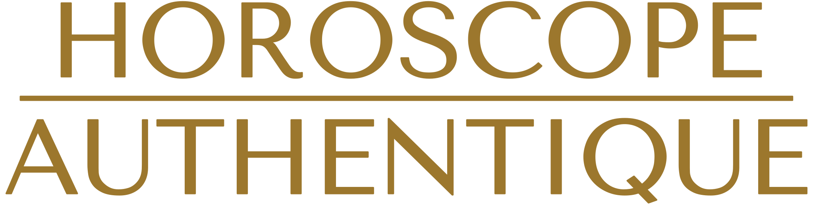

Amour
08h08 en amour
Une relation équilibrée, où chacun reçoit autant qu'il donne, se construit maintenant.

Heure miroir · La force et l'abondance
Le 8 est le nombre de la puissance, de la réussite matérielle et de l'équilibre entre donner et recevoir. Couché, il dessine le signe de l'infini. Le voir doublé suggère que vos efforts peuvent porter leurs fruits si vous osez prendre votre place.
Amour
Une relation équilibrée, où chacun reçoit autant qu'il donne, se construit maintenant.
Travail
Bonne énergie pour négocier, demander ce que vous valez, gérer votre argent avec lucidité.
Spiritualité
L'infini du 8 rappelle que ce que l'on sème revient : semez juste.
Le conseil de Madeleine pour 08h08
Faites un point simple sur vos finances ou vos objectifs.
Le 8 est l'un des neuf chiffres de base de la numérologie. Les heures miroirs sont une lecture symbolique : elles invitent à la réflexion, sans rien prédire.
Une relation équilibrée, où chacun reçoit autant qu'il donne, se construit maintenant.
Bonne énergie pour négocier, demander ce que vous valez, gérer votre argent avec lucidité.
L'infini du 8 rappelle que ce que l'on sème revient : semez juste.
Faites un point simple sur vos finances ou vos objectifs. Notez aussi ce que vous pensiez au moment où vous l'avez vue : c'est souvent là que se trouve le vrai message.